01
このような運営をしていませんか？
入会申込書がない、役員希望だけを書かせる、提出先が学校、会費徴収を学校に委ねるといった運用は、任意加入や学校との分離の観点から問題となり得ます。
- 入会意思を確認する書類や記録があるか。
- 学校提出書類とPTA書類を混ぜていないか。
- 学校経由の徴収・回収に根拠があるか。
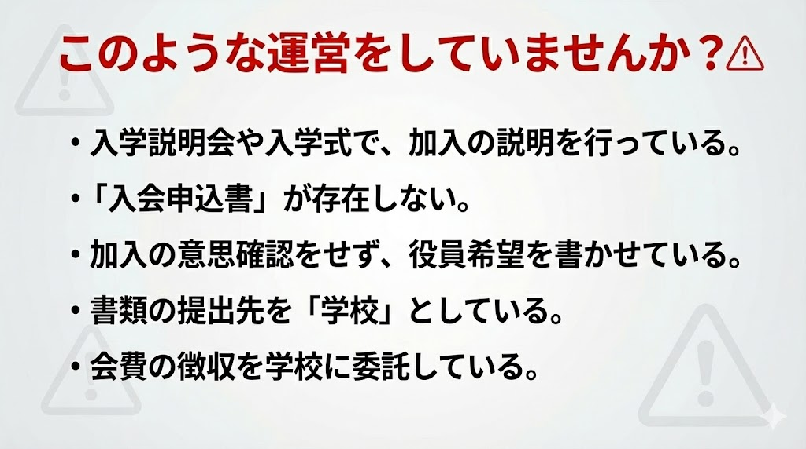
PTAを学校任せにせず、任意団体として説明できる運営へ整えるための実務ガイドです。学校利用、会費、個人情報、教職員への依頼を就任直後に確認します。
このページは、PTA活動の価値を否定するものではありません。問題は、個々の役員の落ち度ではなく、長年引き継がれてきた仕組みのほうにあります。そして適正化は、役員の仕事と責任を増やすためではなく、減らすためのものです。任意加入と手続の明確化は、苦情、強いられた作業、そして役員個人が負うリスクを小さくします。
適正化は、学校との関係を壊す話ではありません。役割の境界をはっきりさせ、紛争を減らすための整理です。
PTAが訴えられた裁判では、会長個人が被告として名指しされています。会費を強制的に集めていた、入会の意思を確認していなかった、という状態は、役員個人の説明責任に直結します。そして別団体である学校は、PTAの裁判では助けてくれません。
「先生が会計をやってくれているから分離できない」と感じるかもしれません。しかし、私的団体であるPTAの会計・徴収を学校教職員が勤務時間中に行うことは、それ自体が公金（給与）の問題を抱えています。その依存こそが、最初に解くべき部分です。詳しい不当利得・個人情報・会計のリスクは、本ページ下部に整理しています。
PTA役員に求められるのは、過去の慣行をそのまま維持することではありません。会員をどう確定したのか、会費を誰からどの根拠で受け取るのか、個人情報をどこから取得したのか、学校職員にどこまで依頼しているのかを、第三者に説明できる状態へ整えることです。
教育委員会向けページでは、学校がPTAのために行っている関与部分を点検対象として整理しています。PTA役員向けページでは、同じ論点を、役員自身が学校に依存しない運営へ切り替えるための実務として整理します。学校を責めるためではなく、PTAが任意団体として自立し、役員個人が説明困難な慣行を背負わないための確認です。
PTA役員にとっても、学校教育法第137条は重要です。学校施設、PTA室、印刷機、児童経由配布、学校連絡ツール、学校ホームページは、PTAが当然に使えるものではありません。学校教育上の支障がないこと、社会教育その他公共のための利用であることを、PTA側も説明できる状態にしておく必要があります。
学校教育上支障のない限り、学校には、社会教育に関する施設を附置し、又は学校の施設を社会教育その他公共のために、利用させることができる。
PTA役員側から見れば、これは学校に便宜を求めるための最低条件です。入会申込記録がない、会費徴収の根拠が不明、非会員児童への配慮がない、学校名簿に依存している、教職員に回収や督促を頼んでいる。このような状態では、学校側が「学校教育上支障がない」と判断しにくくなります。
PTAが学校を利用し続けたいのであれば、学校にお願いする前に、PTA自身が任意加入、個人情報、会費徴収、連絡方法、施設利用条件を整える必要があります。これはPTA活動を弱める話ではなく、学校から独立した任意団体として、学校に迷惑をかけずに活動を続けるための整理です。
| 学校利用の場面 | PTA役員が確認すること | 整っていない場合に起きる問題 |
|---|---|---|
| 学校施設・PTA室・印刷機 | 使用許可、使用目的、鍵管理、印刷物の文責、問い合わせ先を明確にする。 | PTA内部事務を学校が管理しているように見え、学校側が目的外使用の条件を説明しにくくなる。 |
| 児童経由配布・学校説明会での案内 | 任意加入であること、入会しない家庭への不利益がないこと、PTA文書であることを明記する。 | 学校手続と誤認され、保護者が断りにくい勧誘になりやすい。 |
| 学校連絡ツール・学校メール | 誰の責任で送る通知か、非会員を含めて送る必要があるか、個人情報の利用目的を確認する。 | 学校保有情報をPTAのために使っているように見え、個人情報・公私分離の問題になる。 |
学校を使えるかどうかは、「PTAだから当然」ではありません。PTAが任意加入と公私分離を守り、学校教育上の支障を生じさせない運営を示せることが、学校協力を受ける前提になります。
公立学校施設の目的外使用に係る留意事項の周知について（通知）PDFを根拠資料として掲載しています。
学校の働き方改革は、PTA役員にも関係します。文部科学省の3分類では、学校徴収金の徴収・管理や地域ボランティアとの連絡調整が「基本的には学校以外が担うべき業務」に整理されています。学校徴収金でさえ教師が担わない方向に進められている以上、PTA会費やPTA名簿、役員選出は、PTAが自分たちで担うべき内部事務です。

PTA役員が学校に頼んできた作業の多くは、先生の本来業務ではありません。入会申込書の回収、会費袋の回収、未納確認、会員名簿の作成、役員候補者の抽出、PTA通知文の作成・配信、PTA会計の記帳は、PTAが自分たちで処理すべき団体事務です。
令和7年4月30日の文部科学省通知は、学校給食費以外の学校徴収金についても、公会計化して地方公共団体の業務として徴収・管理すること、または学校を経由せず保護者と業者等の間で直接支払い等を行うことを推進しています。学校教育活動に関係する費用でさえ、学校・教師の負担軽減のために学校以外へ移す方向です。PTA会費は任意団体の会費ですから、学校に処理してもらう前提を改める必要があります。
学校と連携することはできます。しかし、連携と代行は違います。学校には教育活動に必要な連絡調整にとどめてもらい、PTA内部の加入、名簿、会費、会計、役員選出、問い合わせ対応は、PTA自身の窓口、Webフォーム、外部サービス、会員向け連絡手段に移す必要があります。
| これまでの慣行 | PTA役員が変える方向 | 理由 |
|---|---|---|
| 担任や学校職員に入会申込書・会費袋を回収してもらう | PTA宛のWebフォーム、郵送、PTA専用メール、PTA役員による直接回収へ移す。 | 学校徴収金でさえ教師が担わない方向にあり、PTA会費は任意団体の内部事務だから。 |
| 学校徴収金と一緒にPTA会費を案内・引落しする | 学校徴収金とは別に、PTA会員に対してPTAが直接会費を請求する。 | 学校教育活動費とPTA会費が混ざると、保護者が学校手続と誤認しやすいから。 |
| 学校名簿や学校連絡ツールに依存する | PTAが本人から必要最小限の情報を取得し、PTAの連絡手段を用意する。 | 学校保有情報をPTA内部事務に使う構造を避ける必要があるから。 |
| 先生に役員候補者の抽出や調整を頼む | 役員選出は会員台帳に基づき、PTA自身の規約と手続で行う。 | 役員選出は学校業務ではなく、任意団体の内部自治だから。 |
「先生に頼めば早い」「学校経由なら回収率が高い」という理由でPTA内部事務を学校に載せ続けると、学校の働き方改革にも、公私分離にも反します。PTAを続けるためにこそ、先生に頼らない仕組みへ移行する必要があります。
就任直後は、活動内容より先に「PTAが自分で説明できる根拠」を確認します。次の7項目に記録や根拠がない場合、慣例のまま続けるのではなく、会則・総会資料・学校との関係を点検してください。
実際の文書・通知・運用例から問題点を確認する場合は、PTA運営の現場実例も併せて確認してください。
画像は、役員が運営を見直す順番に沿って配置しています。図中には強い表現がありますが、本文では個別事情に応じて「問題となり得る」「根拠確認が必要」「見直しが必要」という観点で整理します。
図解は実務上の確認ポイントを示す補助資料です。実際の適法性・適正性は、会則、総会決議、本人同意、学校の関与、教育委員会の運用基準、記録の有無によって確認してください。
最初に、現在の運営が学校手続と混同されていないか、入会・会費・個人情報・学校関与が一つながりで崩れていないかを確認します。
入会申込書がない、役員希望だけを書かせる、提出先が学校、会費徴収を学校に委ねるといった運用は、任意加入や学校との分離の観点から問題となり得ます。

入会申込、会員記録、会費請求、学校関与の分離は一体で確認します。入会記録がないまま会費請求を続けることは、特に見直しが必要です。
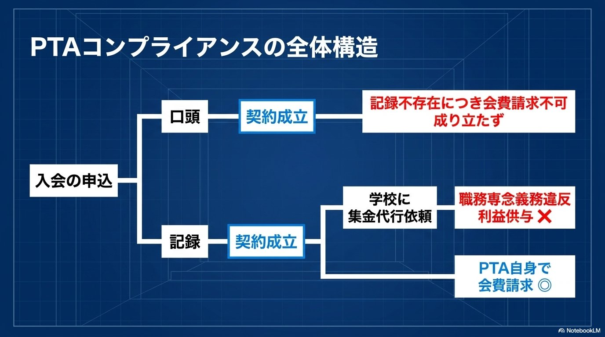
PTAは学校とは別の任意団体です。入会、会費、説明の場を学校手続から切り離し、PTA自身の責任で処理できる形に戻します。
入学説明会や入学式の中でPTA加入説明を行うと、学校からの要請と誤認されやすくなります。説明の場や文書の発行主体を分けることが重要です。
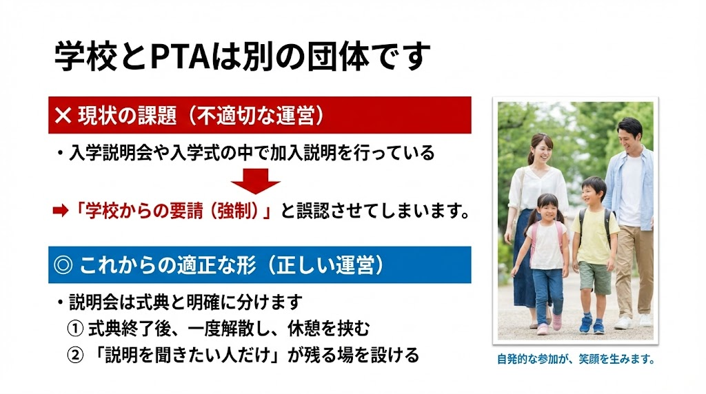
入会は本人の意思表示に基づく団体加入です。紙、電子フォーム、メール等の形式を問わず、後から説明できる入会申込記録を整えます。
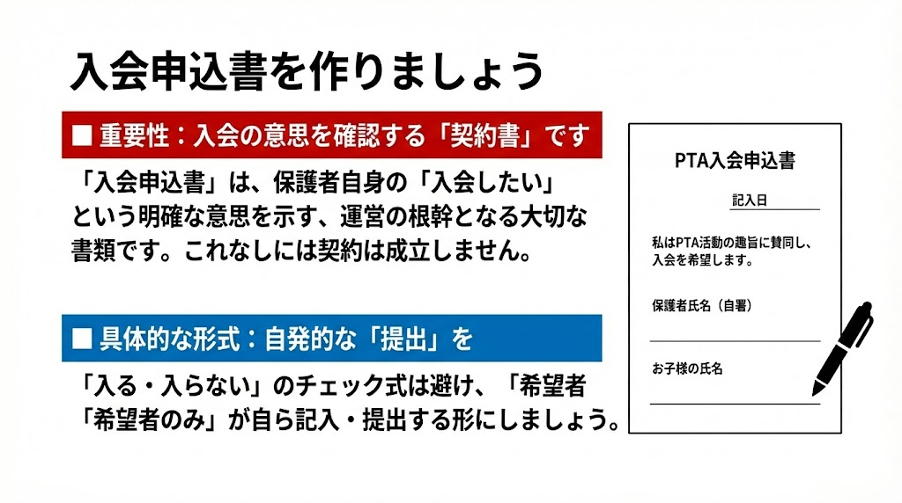
PTA会費は学校徴収金とは別に扱う必要があります。学校口座や学校徴収金に混ぜる運用は、保護者に義務的費用と誤認させるおそれがあります。
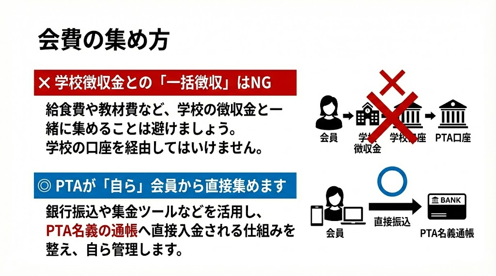
学校職員、学校配布、学校連絡ツール、学校管理職の関与は、単に「PTA活動だから」で済ませず、職務・服務・学校とPTAの分離の観点から確認します。
図中には強い表現がありますが、実務上は校務分掌、職専免、個人情報、非会員混在の有無を確認します。学校職員による配布・回収が不適切運用となり得る場面があります。
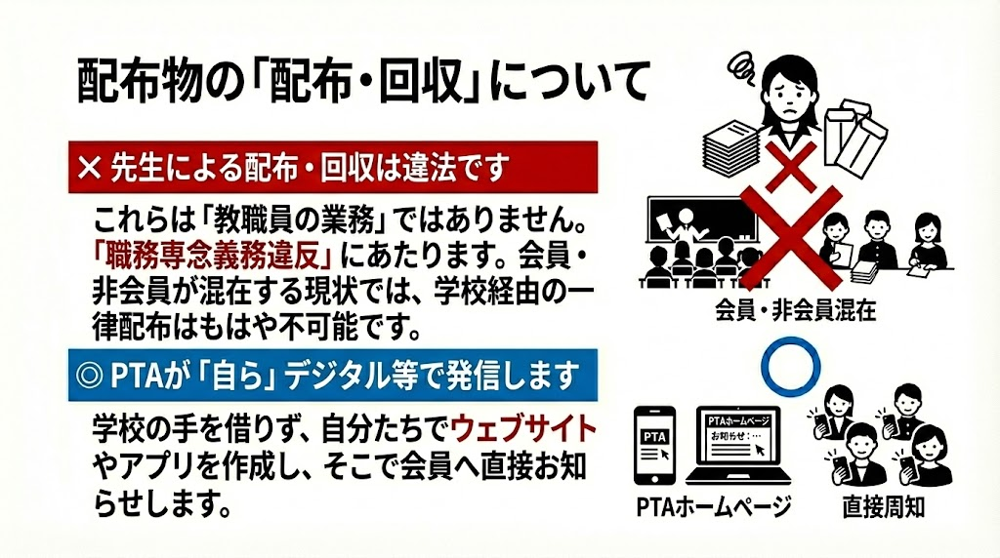
校長・教頭などが主要ポストや会計権限を持つ場合、学校とPTAの分離が不明確になります。助言・連絡窓口と、PTAの意思決定権限は分けて整理します。
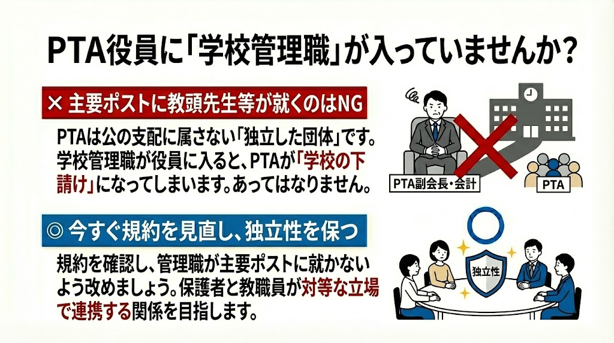
役員や委員の定数を先に置くと、くじ引きや免除審査に流れやすくなります。活動をゼロベースで見直し、必要性と参加意思から設計します。
活動を先に固定して人を当て込む運用は、強制感や不公平感を生みます。必要性、会員の意思、実施可能性を毎年度確認します。
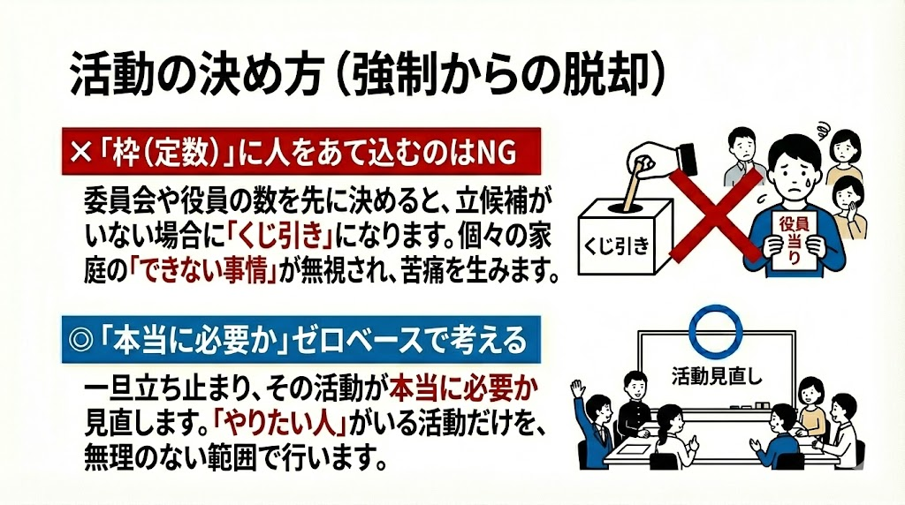
会計はPTAの独立性と説明責任の中心です。学校職員任せ、個人口座、学校への安易な寄付は、会則・総会決議・会計規程に照らして見直します。
図中の強い表現は、学校とPTAの会計分離を徹底するための注意喚起として扱います。寄付や会計処理は、会員の合意、記録、監査を確認してください。
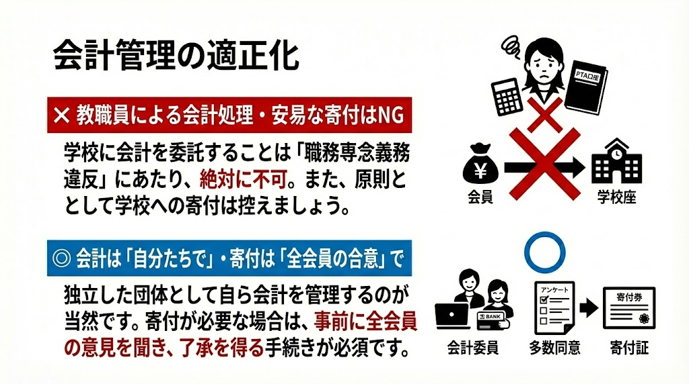
総会の開催方法は、会則、書面決議規定、オンライン開催規定、過去の総会決議によって確認します。対面開催だけに限られるという意味ではありません。
会則が対面出席を前提としているのか、書面決議やオンライン開催を認めているのかを確認します。いずれの方式でも、説明、質疑、議論、記録を軽視しない運用が必要です。
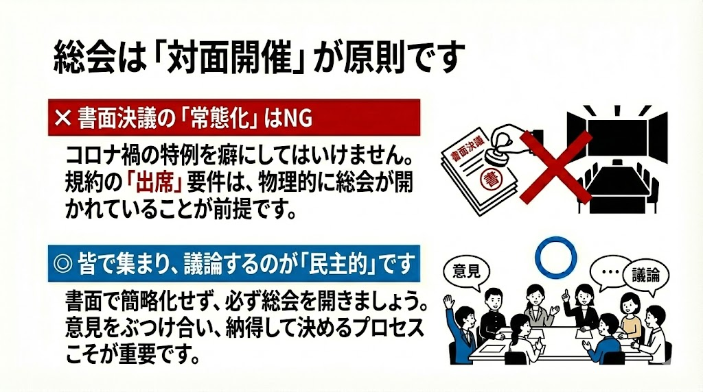
適正化は、誰かを責めるためではなく、保護者・教職員・子どもに無理をかけない仕組みに戻すための作業です。入会、会費、個人情報、役員選出、学校関与を一つずつ分けて見直すことで、PTAはより自発的で信頼される団体に近づきます。
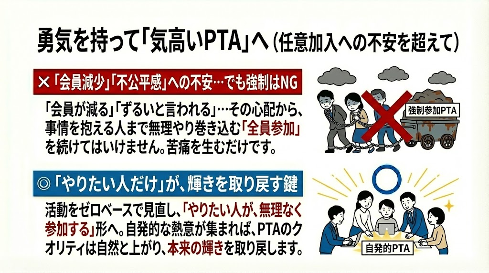
引き継いだその日から始めてください。「知らなかった」は免責理由になりません。
「全員入会」「オプトアウト方式」になっていないか確認します。入会届（自署）が存在するかどうかが最初の判断点です。
学校徴収金とPTA会費が同一口座・同一引落になっていないか。役員個人の通帳で管理されていないか確認します。
教職員がPTA事務にどの程度関与しているか確認します。渉外業務（学校↔PTA間の連絡調整）だけが許容される関与です。
問題が見つかっても慌てず、段階的な改善計画を文書化します。改善着手の事実が記録されていれば、役員の善意が示せます。
どこを変えれば良いか、対比で確認します。
PTA加入は消費者契約です。案内文の書き方一つで、消費者契約法上の「誤認」「困惑」を生じさせる可能性があります。
→ これらは「加入が当然」「支払いが義務」「断ると迷惑」という誤認を生じさせます。消費者契約法第4条の取消し事由になりえます。
→ 「任意加入と一行書くだけでは足りない」。手続全体（配布経路・回収先・徴収方法）も任意加入に合わせる必要があります。
任意加入と書きながら、学校説明会の中で配り、学校提出書類と一緒に回収し、未提出者を会員扱いし、学校徴収金と一緒に会費を引き落とすなら、それは任意加入ではありません。文言だけでなく、手続全体を任意加入に合わせる必要があります。
PTA活動は本人の意思が基本です。「人が集まらない活動は活動量が多すぎる」——ガイドブックが示す原則をそのまま伝えます。
役員が足りない場合、問題は保護者の意識ではありません。活動量が会員の意思と生活実態に合っていないのです。
PTA活動は、無理やり維持するから苦しくなります。
自分から手を挙げて参加する人がいるから、活動に活気が生まれます。
本人の意思で入会し、できる範囲で関わるからこそ、その協力は尊いものになります。
一気に変える必要はありません。優先順位をつけて段階的に進めます。
PTAが独自に入会届を作成し、新年度から配布開始。任意性・個人情報利用目的を明記。非加入の保護者への差別的扱いを禁止する旨を役員全員で確認する。
学校から名簿の提供を受けることを中止。入会届に基づいてPTAが独自の会員名簿を作成する。既存の名簿は破棄または本人同意の取得に移行する。
学校徴収金からPTA会費を分離。PTA名義の専用口座を設置し、役員の交代に依存しない会計体制を整備。会計規程と年次監査を導入する。
教職員によるPTA事務（配布・集金・印刷等）を段階的に廃止。PTAが自前で担う体制を整備する。渉外業務（校長との連絡調整）だけを公式な接点として残す。
PTAと学校の役割分担を覚書として明文化。渉外業務の範囲・方法を規定し、「学校がPTAを運営する」構造を制度的に解消する。
学校がPTAの徴収・会計を代行していることが、分離で最も困る部分です。「先生が会計をやってくれているから切り離せない」という状態を、PTA側の体制づくりで解きます。順番に整えれば、教職員の関与・公金・個人情報の問題が一度に解消します。
最初は手間に見えますが、この移行こそが、教職員を勤務時間中のPTA事務（＝公金の問題）から解放し、学校保有情報への依存（＝個人情報の問題）を断ち、任意団体としての自立を実現する中心的な作業です。学校に「お願い」を続けるより、PTAが自前で回せる体制のほうが、結局は揉めごとが少なくなります。
ガイドブック付録Gをそのまま掲載します。すべてにチェックが入るまでが適正化のゴールです。
就任直後に確認すべき項目を4カテゴリに分類しました。クリックで✓がつきます。印刷してご活用ください。
情報公開請求・問い合わせを通じて得た教育委員会の公式回答を収録しています。役員が「どこに基準を求めるべきか」を知るための参考資料です。
注記：上記の回答・見解は各教育委員会への情報公開請求・公式問い合わせ等を通じて収集したものです。回答の全文は当委員会の資料ページで公開予定です。日付・担当課・回答形式等の詳細は資料請求にてご確認ください。